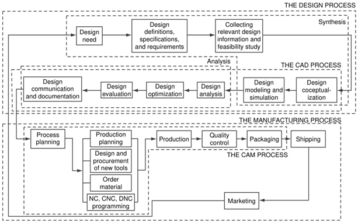
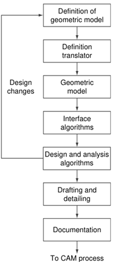
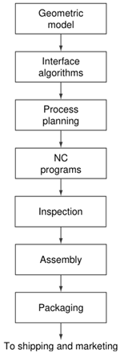
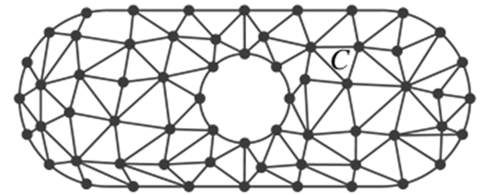

![IM]()
DISEÑO Y MANUFACTURA ASISTIDOS POR COMPUTADORA (0972)
Objetivo(s) del curso:
El alumno diseñará un producto haciendo uso de las técnicas y tecnologías de diseño, ingeniería y manufactura asistidas por computadora (CAD-CAE-CAM).
1. Introducción.
1.1 Ciclo de vida del producto y proyecto de producción.
CAD – CAM
El ciclo de vida del producto y el proyecto de producción abarca desde la concepción inicial de un producto hasta su disposición final. Las etapas de estos incluyen el diseño, producción, distribución y mantenimiento, donde cada fase se apoya en herramientas tecnológicas modernas, como el Diseño Asistido por Computadora (CAD) y la Manufactura Asistida por Computadora (CAM).
CICLO DE VIDA DEL PRODUCTO
El ciclo de vida del producto comprende todas las etapas desde la identificación de una necesidad hasta la disposición final del producto. Este proceso se divide principalmente en dos fases: diseño y fabricación.
Durante el Diseño, se desarrolla la idea inicial, se modela geométricamente y se simula su desempeño para garantizar la viabilidad técnica y económica. El modelado geométrico, utilizando herramientas CAD (diseño asistido por computadora), es esencial para transformar conceptos en modelos precisos que puedan analizarse y optimizarse.


En la Fabricación, herramientas como CAM (manufactura asistida por computadora) aseguran la producción eficiente y precisa del producto. La integración de estas tecnologías permite optimizar el tiempo de comercialización, reducir costos y garantizar la calidad del producto final. En este contexto, la gestión adecuada de los datos generados a lo largo del ciclo de vida del producto es crucial, pues afecta el diseño, análisis, manufactura y mantenimiento.PROYECTO DE PRODUCCIÓN
El proceso de diseño comienza con la conceptualización, donde se identifica una necesidad específica y se propone una solución inicial. Durante esta etapa, se utiliza el modelado geométrico para desarrollar representaciones visuales y matemáticas del producto. Estas representaciones son fundamentales para evaluar su viabilidad técnica y económica. La fase de diseño también incluye la simulación y el análisis, que permiten prever cómo funcionará el producto en condiciones reales. Aquí es crucial el uso de herramientas CAD (diseño asistido por computadora) para generar modelos tridimensionales precisos y facilitar la colaboración entre equipos de diseño y análisis. Además, el diseño se somete a optimización para garantizar que cumpla con los requisitos de rendimiento al menor costo posible. Una vez finalizada esta etapa, se realizan pruebas virtuales mediante prototipos digitales para evaluar el diseño en situaciones simuladas.

El proceso de fabricación toma como base el diseño finalizado y lo traduce en un plan de producción. Este proceso comienza con la planificación de procesos, que incluye la definición de las secuencias de operaciones necesarias para fabricar el producto. Herramientas como los sistemas CAM (manufactura asistida por computadora) permiten automatizar la programación de máquinas CNC, optimizando la eficiencia de las operaciones. También se consideran aspectos como la compra de materiales, la disposición de herramientas y el diseño de fixtures. Una vez completada la planificación, se procede a la producción física, donde se utilizan equipos automatizados para garantizar precisión y consistencia. Los productos fabricados pasan por estrictos controles de calidad para asegurar que cumplan con las especificaciones técnicas antes de ser ensamblados, empaquetados y enviados.El ciclo de vida del producto no termina con la fabricación, sino que incluye el seguimiento postventa y la retroalimentación del mercado. Los comentarios y datos recopilados de los usuarios finales son esenciales para identificar mejoras y guiar el desarrollo de futuras iteraciones del producto.
La implementación adecuada del ciclo de vida del producto requiere la integración de tecnologías avanzadas y un enfoque colaborativo entre equipos interdisciplinarios. Herramientas como el diseño asistido por computadora (CAD), la manufactura asistida por computadora (CAM) y los sistemas de planificación de procesos (CAPP) son fundamentales para optimizar cada etapa, desde la idea inicial hasta la entrega del producto final. Este enfoque holístico no solo mejora la eficiencia y la calidad, sino que también reduce los costos y acelera el tiempo de comercialización.
1.2 Ingeniería concurrente.
INGENIERÍA CONCURRENTE
La ingeniería concurrente es una filosofía de diseño y desarrollo donde las etapas del proceso de creación de un producto se superponen y se integran para reducir costos y tiempos. En lugar de una secuencia lineal, se fomenta el trabajo colaborativo entre departamentos, asegurando una optimización en la transición desde el diseño hasta la manufactura.
La ingeniería concurrente es un enfoque integrador que fomenta el trabajo simultáneo entre las etapas de diseño y manufactura, rompiendo el esquema tradicional lineal. Este paradigma permite que los equipos multidisciplinarios colaboren desde las fases iniciales de desarrollo, anticipando y resolviendo problemas que podrían surgir más adelante en el ciclo de vida del producto.
Al aplicar la ingeniería concurrente, se reducen significativamente los tiempos de desarrollo y se mejora la calidad del producto final. Esto se logra mediante la utilización de herramientas como la planificación de procesos asistida por computadora (CAPP), análisis de elementos finitos (FEM) y simulaciones virtuales que evalúan diferentes escenarios de diseño antes de proceder a la producción.
La ingeniería concurrente es un enfoque integral que busca optimizar el desarrollo de productos al integrar las distintas fases del ciclo de vida en un proceso simultáneo y colaborativo. A diferencia de los métodos tradicionales secuenciales, donde el diseño, la fabricación y la evaluación se realizan de manera independiente y lineal, la ingeniería concurrente promueve la superposición y la interconexión de estas actividades. Este enfoque tiene como objetivo reducir los tiempos de desarrollo, mejorar la calidad del producto y minimizar costos.
En la práctica, la ingeniería concurrente fomenta la colaboración interdisciplinaria desde las primeras etapas del diseño. Esto incluye involucrar a diseñadores, ingenieros, fabricantes y especialistas en marketing en un entorno colaborativo. Al hacerlo, los equipos pueden anticipar posibles problemas de manufactura o viabilidad técnica durante la etapa de conceptualización del producto. Por ejemplo, si un diseño inicial presenta dificultades para ser fabricado, estas limitaciones pueden identificarse y corregirse antes de que se invierta tiempo y recursos significativos.
Una característica clave de la ingeniería concurrente es el uso de herramientas tecnológicas avanzadas, como los sistemas CAD/CAM. Estas herramientas permiten a los equipos trabajar en un modelo digital compartido, donde cada cambio o mejora en el diseño se refleja en tiempo real.
Además, las simulaciones computacionales y los análisis virtuales permiten evaluar diferentes escenarios antes de la producción física. Por ejemplo, se pueden realizar análisis de esfuerzo mediante el método de elementos finitos (FEM) para identificar puntos débiles en el diseño, o simulaciones de dinámica de fluidos computacional (CFD) para evaluar el rendimiento aerodinámico.
Otro aspecto importante es la planificación de procesos asistida por computadora (CAPP), que optimiza la transición del diseño a la producción. Este sistema utiliza modelos geométricos y bases de datos centralizadas para generar automáticamente secuencias de operación, seleccionar herramientas y materiales adecuados, y prever posibles cuellos de botella en la fabricación.
Así, se asegura que las decisiones de diseño estén alineadas con las capacidades de manufactura desde el principio.
La ingeniería concurrente también aborda aspectos relacionados con la calidad y la sostenibilidad. Al considerar criterios como el impacto ambiental, la facilidad de ensamblaje y el reciclaje durante el diseño, se pueden crear productos más sostenibles y responsables.
Esto es posible gracias a metodologías como el análisis del ciclo de vida (LCA), que evalúa el impacto ambiental de un producto desde su fabricación hasta su disposición final.
Los beneficios de la ingeniería concurrente incluyen una reducción significativa en el tiempo de comercialización, productos de mayor calidad y menores costos operativos.
Además, al fomentar una comunicación fluida entre las diferentes áreas, se minimizan los riesgos de errores y retrabajos.
Sin embargo, su implementación requiere un cambio cultural dentro de las organizaciones, así como una inversión inicial en tecnología y capacitación.
1.3 Técnicas y métodos de soporte de la ingeniería concurrente.
Las técnicas de soporte incluyen el uso de modelado geométrico avanzado, análisis de desempeño virtual y sistemas integrados de manufactura.
Herramientas como los sistemas CAD/CAM proporcionan un flujo continuo de datos entre el diseño y la producción, lo que permite evaluar iterativamente los diseños y optimizarlos para cumplir con los requisitos de manufactura.
TÉCNICAS Y MÉTODOS
Modelado Geométrico Avanzado
El modelado geométrico es fundamental para representar el producto en un entorno tridimensional, lo que facilita la visualización, el análisis y la simulación. Este proceso incluye:
Modelos de estructura alámbrica
Útiles para conceptualizar formas básicas del producto.
Modelos de superficie
Representan las capas externas del diseño, ideales para análisis aerodinámico o estético.
Modelos sólidos
Permiten una descripción completa del producto, incluyendo detalles internos y externos. Estos modelos son la base para análisis estructurales, de ensamblaje y de manufactura.
Simulaciones Computacionales
Las simulaciones virtuales permiten probar y validar el diseño antes de proceder a la fabricación física. Entre las técnicas destacadas se encuentran:
· Análisis de Elementos Finitos (FEM): Evalúa esfuerzos, deformaciones y comportamientos estructurales bajo diferentes condiciones de carga.
· Dinámica de Fluidos Computacional (CFD): Analiza el flujo de fluidos y el intercambio de calor, crucial en industrias como la automotriz y la aeroespacial.
· Simulación de Ensamblaje: Verifica cómo interactúan las piezas entre sí y detecta posibles interferencias.
Planificación de Procesos Asistida por Computadora (CAPP)
La planificación eficiente es esencial para garantizar la viabilidad del diseño y su transición a la producción. Los sistemas CAPP generan automáticamente rutas de proceso, seleccionan herramientas y materiales adecuados, y optimizan las operaciones de manufactura. Esto permite:
· Reducir errores humanos al estandarizar procedimientos.
· Integrar requerimientos de diseño con capacidades de manufactura.
· Realizar análisis de costos y tiempos desde etapas tempranas.
Integración CAD/CAM
La conexión entre el diseño asistido por computadora (CAD) y la manufactura asistida por computadora (CAM) permite un flujo continuo de información. Por ejemplo:
· Los modelos CAD se transfieren directamente a las máquinas CNC para programar procesos de mecanizado.
· El uso de simuladores CAM valida las trayectorias de herramientas antes de la producción, reduciendo desperdicios y errores.
Gestión del Ciclo de Vida del Producto (PLM)
Los sistemas PLM organizan y centralizan toda la información relacionada con el producto, desde especificaciones técnicas hasta datos de producción. Esto mejora la colaboración entre equipos multidisciplinarios y asegura que todos los cambios en el diseño se comuniquen en tiempo real.
Prototipado Rápido
El prototipado rápido, como la impresión 3D, permite crear modelos físicos de un diseño en poco tiempo. Estos modelos se utilizan para pruebas funcionales, presentaciones a clientes o validación de ensamblajes, reduciendo significativamente los ciclos de desarrollo.
Técnicas de Manufactura Flexible
Los sistemas de manufactura flexible (FMS), apoyados por robots y líneas de producción automatizadas, facilitan la adaptación a cambios en el diseño sin interrumpir la producción. Esto es particularmente valioso en entornos de alta personalización.
Diseño Basado en el Conocimiento
El uso de sistemas expertos y bases de datos centralizadas permite capturar y reutilizar conocimientos previos, optimizando decisiones de diseño y manufactura. Esto se traduce en una reducción de errores y en una mejora continua de los procesos.
1.4 Desarrollo integrado del producto.
DIP - DESARROLLO INTEGRADO DEL PRODUCTO
El desarrollo integrado del producto (DIP) es un enfoque que combina la ingeniería concurrente con otros principios de gestión y diseño para optimizar el proceso de creación de productos.
Este enfoque no solo considera el diseño y la manufactura, sino también aspectos como el marketing, la logística y el soporte postventa desde las primeras etapas del proyecto.
El DIP se basa en la colaboración interdisciplinaria y la integración de información en tiempo real. Los equipos de trabajo utilizan plataformas de gestión de datos que permiten compartir y actualizar información de manera continua. Esto facilita la toma de decisiones informadas y la adaptación rápida a los cambios del mercado.
Uno de los principios clave del DIP es el diseño para la manufacturabilidad y el ensamblaje (DFMA), que busca simplificar el diseño del producto para facilitar su producción y ensamblaje. Esto reduce costos y mejora la eficiencia de la línea de producción. Además, el DIP promueve el diseño sostenible, considerando el impacto ambiental y la reutilización de materiales.
El DIP también se apoya en metodologías ágiles, que permiten la iteración rápida y la adaptación continua del producto. Esto es especialmente útil en entornos dinámicos donde las necesidades del mercado cambian rápidamente. La retroalimentación constante de los clientes se integra en el proceso de desarrollo, asegurando que el producto final cumpla con sus expectativas.
En resumen, el desarrollo integrado del producto es una estrategia que busca optimizar cada fase del ciclo de vida del producto mediante la colaboración interdisciplinaria, la integración de tecnologías avanzadas y el enfoque en la sostenibilidad y la eficiencia. Este enfoque permite a las empresas ser más competitivas y adaptarse mejor a las demandas del mercado global.
2. Diseño asistido por computadora.
2.1 Modelado geométrico.
MODELOS GEOMETRICOS
El modelado geométrico es una disciplina esencial en el diseño asistido por computadora (CAD), la fabricación asistida por computadora (CAM) y la ingeniería asistida por computadora (CAE). Su propósito es la representación matemática y visual de objetos en un sistema computarizado, lo que permite su manipulación en diversas aplicaciones industriales.
Dentro del modelado geométrico existen tres enfoques principales: modelos de estructura alámbrica (wireframe), modelos de superficies y modelos sólidos.
Los modelos de estructura alámbrica representan los objetos únicamente con líneas y vértices, lo que da una idea aproximada de su forma pero sin definir su interior. Son útiles en las primeras etapas del diseño, pero no son adecuados para aplicaciones avanzadas como el análisis estructural o la simulación física.
Los modelos de superficies, por otro lado, incluyen información sobre las caras del objeto. Pueden representar con precisión la geometría externa, pero aún carecen de una definición clara del volumen interno del objeto. Se utilizan comúnmente en aplicaciones donde la apariencia es más relevante que la composición estructural, como en la animación por computadora o el diseño aerodinámico.
Finalmente, los modelos sólidos son la forma más completa de representación geométrica, ya que incluyen información tanto de la superficie como del volumen interno de los objetos. Estos modelos permiten una serie de análisis avanzados, como cálculos de propiedades físicas (masa, centro de gravedad, inercia), simulaciones de colisiones e incluso generación de trayectorias de herramientas para la fabricación asistida por computadora (CAM).
El modelado geométrico en CAD consiste en la creación y representación de objetos en el espacio tridimensional. Se utilizan estructuras de datos que almacenan la topología (relaciones espaciales) y la geometría (coordenadas y formas). Ejemplo de modelos son:
· Modelo alámbrico (wireframe): define los bordes de un objeto.
· Modelo de superficie: utiliza superficies para describir los límites.
· Modelo sólido: representa un objeto completamente, incluyendo su interior.
El modelado geométrico es una herramienta crucial para muchas aplicaciones de ingeniería. En el contexto del diseño mecánico, por ejemplo, permite representar componentes con gran precisión, asegurando que se ajusten correctamente dentro de ensamblajes complejos. También es fundamental en la manufactura, ya que los datos geométricos de un modelo pueden ser utilizados directamente para generar instrucciones de mecanizado en sistemas de manufactura automatizada.
2.2 Proceso de diseño asistido por computadora.
PROCESO - CAD
El diseño asistido por computadora (CAD) es un proceso que integra herramientas computacionales para asistir a los ingenieros en la conceptualización, análisis y producción de diseños. Se compone de varias etapas que van desde la recopilación de información hasta la generación de documentación final del producto.
El primer paso en el proceso de diseño es la Conceptualización del Producto, donde se identifican las necesidades del mercado y se establecen los requisitos del diseño. En esta fase, se generan bocetos y diagramas preliminares que capturan la idea inicial.
A continuación, se realiza el modelado geométrico, en el que se utiliza software CAD para crear representaciones digitales detalladas de los componentes. En esta etapa se selecciona el tipo de modelado más adecuado (alámbrico, de superficies o sólido) en función de los requisitos del diseño y la manufactura.
Después, se lleva a cabo el análisis del diseño, que implica evaluar el comportamiento del producto bajo diversas condiciones. Este análisis puede incluir simulaciones estructurales, térmicas o aerodinámicas para identificar posibles fallas antes de la fabricación.
Una vez optimizado el diseño, se procede a la documentación y comunicación del diseño. Se generan planos técnicos, listas de materiales y especificaciones que serán utilizadas en la producción. Esta información es crucial para garantizar que el producto final se fabrique conforme a los estándares de calidad requeridos.
Finalmente, el proceso de diseño culmina con la fabricación y ensamblaje del producto. Los datos del modelo CAD se pueden exportar a sistemas CAM para la automatización del mecanizado, o bien utilizarse en impresión 3D para la creación de prototipos rápidos.
En resumen son:
· Conceptualización: generación de ideas iniciales.
· Modelado geométrico: creación de prototipos digitales.
· Simulación: análisis computacional (esfuerzos, temperaturas, etc.).
· Verificación y validación: comparación con especificaciones.
· Documentación: creación de planos y reportes.
2.3 Sistemas de diseño asistido por computadora.
CLASIFICACIÓN
Los sistemas CAD se clasifican en:
2D: utilizados principalmente para dibujo técnico.
3D: permiten modelado alámbrico, de superficie y
sólido.
Herramientas como Autodesk AutoCAD, CATIA y SolidWorks son
ejemplos destacados en la industria.
SISTEMAS - CAD
Los sistemas de diseño asistido por computadora (CAD) han evolucionado significativamente, permitiendo la creación, modificación, análisis y optimización de modelos de ingeniería de una manera más eficiente y precisa. Estos sistemas están diseñados para facilitar la automatización del diseño y reducir los errores asociados con los métodos manuales tradicionales.
Un sistema CAD consta de varios componentes clave: hardware, software, interfaces de usuario y bases de datos geométricas.
El hardware incluye estaciones de trabajo gráficas avanzadas, dispositivos de entrada como tabletas digitalizadoras y ratones 3D, así como impresoras y plóters de alta precisión para la salida de diseños. En cuanto al software, los sistemas CAD modernos ofrecen herramientas de modelado geométrico en 2D y 3D, simulación, renderizado y generación de documentación técnica.
Uno de los elementos más importantes en un sistema CAD es su capacidad para manejar bases de datos geométricas estructuradas.
Estas bases almacenan información sobre los objetos diseñados, incluyendo sus propiedades geométricas y topológicas. Gracias a esto, los diseñadores pueden modificar y reutilizar modelos sin necesidad de comenzar desde cero en cada nuevo proyecto.
Otra característica clave de los sistemas CAD es la posibilidad de realizar simulaciones y análisis antes de la fabricación.
A través de técnicas como el análisis de elementos finitos (FEA) y la simulación de dinámica de fluidos (CFD), los ingenieros pueden evaluar el rendimiento de un diseño en diferentes condiciones de operación. Esto reduce el tiempo de desarrollo y los costos asociados con la creación de prototipos físicos.
Además, los sistemas CAD modernos están integrados con herramientas de manufactura asistida por computadora (CAM) e ingeniería asistida por computadora (CAE), lo que permite una conexión fluida entre el diseño y la producción.
Esto es especialmente útil en industrias como la automotriz y la aeroespacial, donde la precisión y la eficiencia son críticas para el éxito de los productos.
2.4 Diseño paramétrico, variacional y asociativo.
DISEÑO PARAMÉTRICO
El diseño paramétrico es una metodología dentro del CAD que permite la creación de modelos mediante la definición de parámetros y relaciones matemáticas.
En lugar de diseñar objetos de forma manual y estática, los modelos paramétricos pueden ajustarse automáticamente cuando se modifican ciertos valores de entrada.
Un diseño paramétrico se basa en restricciones geométricas y ecuaciones matemáticas. Por ejemplo, un ingeniero puede definir una pieza con restricciones de longitud, ángulo y radios, asegurando que cualquier modificación respete las relaciones predefinidas.
Esto permite una flexibilidad significativa, ya que los cambios pueden propagarse automáticamente en todo el modelo sin necesidad de rediseñar cada componente individualmente.
DISEÑO VARIACIONAL
El diseño variacional es un enfoque que utiliza ecuaciones algebraicas para definir la forma y posición de los objetos.
En lugar de depender exclusivamente de parámetros numéricos, este método permite a los diseñadores manipular entidades geométricas con base en relaciones matemáticas complejas. Esto es particularmente útil en el análisis de restricciones y en la optimización de formas estructurales.
DISEÑO ASOCIATIVO
El diseño asociativo se refiere a la capacidad de los modelos CAD para mantener relaciones entre diferentes elementos del diseño.
Por ejemplo, en un ensamblaje mecánico, una modificación en una pieza puede reflejarse automáticamente en todas las demás partes relacionadas. Esta característica es crucial en la ingeniería moderna, ya que permite que los cambios en el diseño se implementen de manera eficiente y sin errores humanos.
El uso combinado de estos enfoques ha revolucionado la forma en que los productos son diseñados y fabricados.
Las herramientas CAD modernas permiten crear modelos altamente detallados y adaptables, reduciendo significativamente los tiempos de desarrollo y aumentando la eficiencia en la producción.
2.5 Realidad virtual.
REALIDAD VIRTUAL (VR)
La realidad virtual (VR) es una tecnología que permite a los diseñadores e ingenieros sumergirse en entornos digitales tridimensionales generados por computadora.
En el contexto del diseño asistido por computadora (CAD), la VR ofrece herramientas avanzadas para la visualización, simulación y manipulación de modelos geométricos de manera interactiva.
Concepto y Aplicaciones
La realidad virtual en el ámbito del diseño asistido por computadora se basa en la creación de entornos simulados en los que los usuarios pueden interactuar con modelos digitales como si fueran objetos físicos.
Esto se logra mediante dispositivos como gafas de realidad virtual, guantes hápticos y sistemas de seguimiento de movimiento.
APLICACIONES MÁS IMPORTANTES
- Visualización avanzada de modelos 3D: Permite a los diseñadores explorar sus creaciones en un entorno inmersivo, facilitando la identificación de errores y la optimización del diseño antes de la fabricación.
- Simulación de ensamblajes: Los ingenieros pueden probar cómo interactúan diferentes partes de un producto en un entorno virtual sin necesidad de prototipos físicos.
- Entrenamiento y educación: La realidad virtual se usa en la formación de profesionales para simular escenarios industriales y mejorar la capacitación en el uso de herramientas de diseño.
- Colaboración remota: Equipos de trabajo distribuidos en diferentes ubicaciones pueden reunirse en un espacio virtual compartido para discutir y modificar diseños en tiempo real.
TECNOLOGÍAS Y DISPOSITIVOS UTILIZADOS
Para aprovechar la realidad virtual en CAD, es necesario contar con hardware y software especializado. Algunos de los dispositivos más utilizados incluyen:
- Gafas de Realidad Virtual (HMD - Head Mounted Displays): Dispositivos como Oculus Rift, HTC Vive y Microsoft HoloLens permiten la inmersión total en modelos 3D.
- Guantes y Controladores Hápticos: Facilitan la manipulación directa de los modelos mediante la simulación del tacto y la fuerza.
- Sensores de Movimiento: Cámaras y dispositivos como el Leap Motion o el Microsoft Kinect permiten el seguimiento preciso de las manos y el cuerpo del usuario.
En cuanto al software, varias plataformas han integrado la realidad virtual en su funcionalidad CAD, como SolidWorks, Autodesk Revit y Siemens NX.
Estos programas permiten la visualización inmersiva y la modificación de modelos en tiempo real.
Beneficios de la Realidad Virtual en el Diseño Asistido por Computadora
La implementación de VR en CAD ofrece múltiples ventajas para el diseño y la manufactura:
- Mayor precisión en el diseño: La visualización inmersiva permite detectar errores que podrían pasar desapercibidos en una pantalla 2D.
- Reducción de costos: Al evitar la creación de prototipos físicos innecesarios, las empresas pueden ahorrar materiales y tiempo de producción.
- Optimización del proceso de diseño: La posibilidad de interactuar con modelos 3D en un entorno virtual acelera la toma de decisiones y mejora la comunicación entre los equipos de trabajo.
- Mayor accesibilidad a la información: La realidad virtual permite acceder a detalles técnicos de un modelo sin necesidad de consultar planos o documentos externos.
3. Ingeniería asistida por computadora.
3.1 Ingeniería asistida por computadora.
CAE
La ingeniería asistida por computadora (CAE, por sus siglas en inglés) es una disciplina que emplea herramientas y software computacionales avanzados para asistir en diversas tareas de ingeniería, abarcando desde el diseño conceptual hasta el análisis detallado y la optimización de productos y sistemas.
La CAE es parte integral del proceso de diseño y fabricación asistidos por computadora (CAD/CAM), y su impacto ha sido fundamental en sectores como la automoción, la industria aeroespacial, la ingeniería civil y la manufactura de componentes mecánicos.
Esta disciplina ha permitido a los ingenieros analizar y mejorar el rendimiento estructural, térmico y de flujo de fluidos antes de que se produzcan prototipos físicos, lo que ha generado una reducción significativa de costos y tiempos de desarrollo.
APLICACIONES
La aplicación de la CAE incluye el análisis estructural mediante el método de elementos finitos (FEM), la dinámica de fluidos computacional (CFD), y el análisis térmico, cada uno de los cuales contribuye a prever el comportamiento del producto bajo condiciones reales.
Esto es particularmente relevante en diseños que deben soportar altas cargas mecánicas, temperaturas extremas o flujos complejos.
· Análisis estructural: Evalúa el comportamiento de componentes mecánicos y estructurales bajo cargas estáticas y dinámicas. Utiliza métodos como el análisis de elementos finitos (FEA) para determinar distribuciones de esfuerzo, deformaciones y posibles puntos de falla.
· Dinámica de fluidos computacional (CFD): Simula el flujo de fluidos y la transferencia de calor en sistemas complejos. Esto es crucial en la industria aeroespacial, automotriz y de energía.
· Análisis térmico: Calcula la distribución de temperatura en componentes sujetos a condiciones térmicas extremas.
· Optimización del diseño: Permite realizar estudios paramétricos para encontrar configuraciones óptimas de diseño que cumplan con restricciones técnicas y minimicen costos.
PROCESO
El proceso de ingeniería asistida por computadora sigue varias etapas clave. En primer lugar, se lleva a cabo el modelado geométrico, una fase en la que se crea una representación tridimensional del componente o sistema mediante software CAD.
Este modelo debe definir con precisión no solo la geometría externa, sino también las propiedades internas del material, como su resistencia, ductilidad y comportamiento térmico.
A continuación, se establecen las condiciones de contorno aplicables al sistema, lo que incluye la definición de cargas externas, restricciones de movimiento y posibles factores ambientales.
Posteriormente, el modelo es discretizado en una malla de elementos finitos, donde cada elemento actúa como una unidad de cálculo en el análisis numérico.
Esta malla puede ajustarse para lograr un equilibrio entre la precisión y la eficiencia computacional, ya que una mayor densidad de elementos mejora la precisión del análisis, pero incrementa el tiempo de procesamiento.
Una vez creada la malla, se procede a la aplicación de algoritmos matemáticos que resuelven las ecuaciones diferenciales que describen el comportamiento del sistema.
Esta etapa puede incluir el uso de métodos iterativos avanzados, como la eliminación de Gauss o el método de Newton-Raphson, que permiten manejar grandes sistemas de ecuaciones lineales y no lineales.
Los resultados obtenidos se interpretan para identificar posibles problemas de diseño, como concentraciones excesivas de esfuerzo, deformaciones significativas o riesgos de falla estructural. Además, los ingenieros pueden realizar estudios paramétricos para optimizar el diseño, evaluando diferentes configuraciones y materiales hasta encontrar la solución óptima que cumpla con los requisitos funcionales, estéticos y económicos del proyecto.
BENEFICIOS
La ingeniería asistida por computadora ofrece múltiples beneficios que han transformado la industria. Entre ellos se destaca la reducción de costos, ya que minimiza la necesidad de construir prototipos físicos costosos y permite identificar problemas en las primeras etapas del diseño.
También acelera significativamente el desarrollo de productos, al acortar los ciclos de diseño mediante simulaciones rápidas y precisas. Además, mejora la calidad del producto final, ya que proporciona datos detallados sobre su rendimiento y facilita la toma de decisiones informadas basadas en resultados cuantitativos.
3.2 Técnicas numéricas en el análisis de esfuerzo.
ANÁLISIS DE ESFUERZO
El análisis de esfuerzo es una disciplina esencial en el campo de la ingeniería mecánica, civil y aeroespacial, ya que permite evaluar la resistencia y estabilidad de estructuras y componentes sometidos a diversas condiciones de carga.
Las técnicas numéricas desempeñan un papel fundamental en este análisis, al proporcionar herramientas computacionales avanzadas que permiten simular y predecir el comportamiento de sistemas complejos.
Una de las técnicas más destacadas y utilizadas en la actualidad es el Método de Elementos Finitos (FEM), que ha revolucionado el análisis estructural y el diseño ingenieril al ofrecer soluciones precisas y detalladas para problemas que no pueden resolverse mediante métodos analíticos tradicionales.
Método de Elementos Finitos (FEM)
El método de elementos finitos (FEM) se basa en la discretización de una estructura continua en un conjunto de elementos finitos interconectados por nodos. Cada elemento tiene propiedades geométricas y de material definidas, y se le asignan ecuaciones diferenciales que describen su comportamiento bajo cargas externas. Estas ecuaciones se ensamblan en un sistema global que representa el equilibrio de fuerzas y desplazamientos en toda la estructura.
Proceso del FEM
El proceso de análisis mediante FEM incluye varias etapas críticas. Primero, se lleva a cabo el modelado y discretización del sistema, lo que implica dividir la geometría en una malla de elementos que pueden ser lineales, cuadráticos o curvos, dependiendo de la complejidad del problema. A continuación, se definen las propiedades del material, como el módulo de elasticidad, el coeficiente de Poisson y el límite elástico, que determinan la respuesta del sistema ante las cargas aplicadas.

Una vez definida la malla y las propiedades del material, se aplican las condiciones de contorno, que pueden incluir restricciones de movimiento, cargas distribuidas, presiones y fuerzas concentradas.
Estas condiciones son fundamentales para garantizar que el modelo represente adecuadamente la situación real que se desea analizar. Posteriormente, se formula el sistema global de ecuaciones de equilibrio, que relaciona las fuerzas aplicadas con los desplazamientos y deformaciones de los nodos.
Este sistema suele ser de gran tamaño y complejidad, por lo que se resuelve mediante técnicas numéricas avanzadas, como el método de eliminación de Gauss, los métodos iterativos de gradiente conjugado o el método de Newton-Raphson, que permiten manejar ecuaciones no lineales y problemas de contacto.
Los resultados del análisis mediante FEM incluyen distribuciones detalladas de esfuerzo, deformaciones y desplazamientos en toda la estructura.
Estos resultados son interpretados por los ingenieros para identificar posibles puntos críticos, como concentraciones de esfuerzo que podrían provocar fallas o áreas con deformaciones excesivas que comprometan la funcionalidad del sistema. Además, el FEM permite realizar análisis de modos de vibración, estabilidad y pandeo, lo que es particularmente relevante en estructuras sometidas a cargas dinámicas o compresión axial.
TÉCNICAS COMPLEMENTARIAS
Además del método de elementos finitos, existen otras técnicas numéricas que complementan el análisis de esfuerzo. El método de diferencias finitas (FDM) es una de ellas y se utiliza para resolver ecuaciones diferenciales mediante aproximaciones discretas basadas en diferencias entre valores vecinos en una malla regular. Esta técnica es especialmente útil en problemas de transferencia de calor y dinámica de fluidos.
Por otro lado, el método de volúmenes finitos (FVM) es ampliamente utilizado en la dinámica de fluidos computacional (CFD) para calcular flujos y transferencias de calor en sistemas complejos.
Otra técnica importante es el método de Rayleigh-Ritz, que utiliza funciones aproximadas para resolver problemas de equilibrio en sistemas mecánicos, y el método de galerkin, que es una extensión de este enfoque y se emplea en análisis estructurales y de flujo.
IMPORTANCIA DEL ANÁLISIS NUMÉRICO EN LA INGENIERÍA
La importancia del análisis numérico en la ingeniería moderna radica en su capacidad para abordar problemas complejos que no pueden resolverse mediante cálculos analíticos simples.
Las técnicas numéricas permiten realizar simulaciones detalladas y precisas que mejoran la confiabilidad, seguridad y eficiencia de los productos diseñados.
Sin embargo, es fundamental asegurar la validez y la convergencia de los resultados obtenidos mediante estas técnicas.
Esto implica realizar estudios de refinamiento de malla, en los que se reduce el tamaño de los elementos para aumentar la precisión de los cálculos, y llevar a cabo análisis de sensibilidad para evaluar cómo varían los resultados ante cambios en las propiedades del material y las condiciones de contorno.
Además, siempre que sea posible, los resultados numéricos deben compararse con datos experimentales para validar su precisión y confiabilidad.
Convergencia y Validación de Resultados
Un aspecto importante en el análisis numérico es asegurar la convergencia y la validez de los resultados. Esto implica:
· Refinamiento de la Malla: Reducir el tamaño de los elementos para mejorar la precisión.
· Análisis de Sensibilidad: Evaluar cómo varían los resultados ante cambios en las propiedades de material y las condiciones de contorno.
· Comparación con Resultados Experimentales: Validar los resultados numéricos mediante pruebas físicas cuando sea posible.
3.3 Simulación de fluidos y mecanismos.
SIMULACIÓN
La simulación de fluidos y mecanismos es una parte esencial dentro del campo del diseño asistido por computadora (CAD/CAM) y la ingeniería asistida por computadora (CAE). Esta disciplina permite modelar y analizar el comportamiento de sistemas mecánicos y fluidos en condiciones controladas mediante herramientas computacionales avanzadas. El objetivo principal es optimizar diseños y reducir costos asociados con la creación de prototipos físicos. La simulación no solo mejora la eficiencia del diseño, sino que también contribuye a predecir el rendimiento y la seguridad de productos complejos.
SIMULACIÓN DE FLUIDOS (CFD)
En el caso de la simulación de fluidos, conocida técnicamente como Dinámica de Fluidos Computacional (CFD, por sus siglas en inglés), esta utiliza algoritmos y técnicas matemáticas para modelar el comportamiento de fluidos (líquidos y gases) en movimiento. En aplicaciones industriales y científicas, CFD se emplea para analizar fenómenos como el flujo de aire alrededor de vehículos, el comportamiento de fluidos en tuberías o la transferencia de calor en sistemas térmicos.
El proceso de simulación CFD involucra varios pasos fundamentales. Primero, se construye un modelo geométrico del sistema a estudiar, el cual se divide en pequeñas celdas mediante un proceso conocido como mallado. Cada celda contiene información específica sobre las propiedades del fluido, como la velocidad, la presión y la temperatura. Posteriormente, se aplican ecuaciones diferenciales que describen la dinámica del fluido, como las ecuaciones de Navier-Stokes, las cuales gobiernan el movimiento de fluidos viscosos.
El análisis CFD es utilizado en una amplia gama de aplicaciones industriales, incluyendo sectores como el aeroespacial, donde se estudia el flujo aerodinámico y se trabaja para reducir la resistencia al avance en aeronaves. En la industria automotriz, la simulación CFD optimiza el flujo de aire en torno a los vehículos con el fin de mejorar la eficiencia del combustible. Por su parte, la ingeniería civil aplica esta tecnología para modelar el flujo en ríos, presas y sistemas de drenaje, mientras que la ingeniería química la utiliza para analizar reacciones químicas en flujos turbulentos dentro de reactores.
Uno de los retos más significativos en CFD es garantizar la precisión del modelo, lo cual depende en gran medida de la calidad del mallado, la formulación de las condiciones de contorno y los métodos numéricos empleados. Las simulaciones avanzadas requieren potentes recursos computacionales debido a la gran cantidad de datos que deben procesarse. Con la llegada de la computación paralela y los superordenadores, las simulaciones CFD han ganado en velocidad y precisión, permitiendo análisis más detallados que aceleran los procesos de desarrollo y reducen el riesgo de errores en el diseño final.
SIMULACIÓN DE MECANISMOS (MBD)
La simulación de mecanismos, también conocida como Dinámica de Cuerpos Multisólidos (MBD, por sus siglas en inglés), se centra en el estudio del movimiento y la interacción entre cuerpos sólidos conectados mediante articulaciones o enlaces mecánicos. Esta disciplina es fundamental en el diseño de sistemas mecánicos complejos como robots, suspensiones de automóviles y maquinaria industrial.
El análisis MBD involucra la creación de un modelo virtual que representa cada componente del mecanismo y sus propiedades físicas (masa, inercia, fricción). Posteriormente, se definen las fuerzas y momentos aplicados sobre el sistema, así como las restricciones que determinan el movimiento relativo entre los componentes.
El software MBD calcula las trayectorias, velocidades y aceleraciones de cada cuerpo y puede identificar posibles interferencias, colisiones o condiciones de carga crítica. Entre las aplicaciones prácticas de la simulación MBD se encuentran el desarrollo de sistemas automotrices como las suspensiones y frenos, donde se busca mejorar la estabilidad y el confort del vehículo, y también el análisis cinemático y dinámico de brazos robóticos para optimizar la trayectoria y minimizar el consumo de energía.
Además, en maquinaria pesada, esta simulación permite evaluar el rendimiento de excavadoras, grúas y otros equipos sometidos a cargas dinámicas. Uno de los beneficios clave de la simulación MBD es la posibilidad de realizar estudios paramétricos para explorar diferentes configuraciones del diseño y optimizar el rendimiento del sistema sin necesidad de construir prototipos físicos.
Los sistemas de ingeniería asistidos por computadora (CAE, por sus siglas en inglés) constituyen una herramienta esencial en la moderna práctica de la ingeniería. Estos sistemas permiten a los ingenieros analizar y optimizar diseños mediante simulaciones computacionales, reduciendo el tiempo y costo asociados con el desarrollo de productos. Las herramientas CAE abarcan una amplia gama de disciplinas, incluyendo análisis estructural, dinámica de fluidos, transferencia de calor, dinámica de cuerpos rígidos y modelado multifísico.
Los sistemas CAE suelen estar compuestos por varios módulos interconectados que abordan diferentes aspectos del diseño y la simulación. Uno de los módulos más destacados es el Análisis de Elementos Finitos (FEA), que se utiliza para analizar el comportamiento estructural de componentes sólidos bajo diversas condiciones de carga.
El FEA permite evaluar esfuerzos, deformaciones y modos de vibración, siendo ampliamente utilizado en sectores como la industria automotriz, aeroespacial y civil. También es importante el módulo de Dinámica de Fluidos Computacional (CFD), que analiza el comportamiento de fluidos y la transferencia de calor en sistemas de ventilación, turbinas y motores. Asimismo, la Dinámica Multisólida (MBD) estudia el movimiento de cuerpos rígidos conectados mediante enlaces mecánicos, mientras que otros módulos abordan la optimización automática del diseño.
3.4 Sistemas de ingeniería asistidos por computadora.
SISTEMAS - CAE
Los sistemas de ingeniería asistidos por computadora (CAE) constituyen una herramienta esencial en la moderna práctica de la ingeniería. Estos sistemas permiten a los ingenieros analizar y optimizar diseños mediante simulaciones computacionales, reduciendo el tiempo y costo asociados con el desarrollo de productos.
Las herramientas CAE abarcan una amplia gama de disciplinas, incluyendo análisis estructural, dinámica de fluidos, transferencia de calor, dinámica de cuerpos rígidos y modelado multifísico.
COMPONENTES Y MÓDULOS DE CAE
Los sistemas CAE suelen estar compuestos por varios módulos interconectados que abordan diferentes aspectos del diseño y la simulación:
1. Análisis de Elementos Finitos (FEA): Este módulo se utiliza para analizar el comportamiento estructural de componentes sólidos bajo diversas condiciones de carga. FEA permite evaluar esfuerzos, deformaciones y modos de vibración, y es ampliamente utilizado en la industria automotriz, aeroespacial y civil.
2. Dinámica de Fluidos Computacional (CFD): Este módulo se enfoca en el análisis del comportamiento de fluidos y la transferencia de calor. Es clave en el diseño de sistemas de ventilación, turbinas, intercambiadores de calor y motores.
3. Dinámica Multisólida (MBD): Como se mencionó anteriormente, este módulo analiza el movimiento de cuerpos rígidos conectados mediante enlaces mecánicos.
4. Optimización: Algunos sistemas CAE incluyen herramientas de optimización que permiten ajustar automáticamente los parámetros del diseño para maximizar el rendimiento o minimizar el peso y costo.
5. Integración CAD/CAE: Los sistemas CAE suelen estar integrados con herramientas de diseño asistido por computadora (CAD), lo que permite una transferencia fluida de modelos geométricos entre el entorno de diseño y el de simulación.
APLICACIONES
Las aplicaciones de CAE se extienden a diversas industrias, incluyendo:
· Aeroespacial: Análisis de estructuras aeronáuticas y simulación aerodinámica.
· Automotriz: Evaluación de resistencia al impacto, optimización de chasis y simulación de motores.
· Ingeniería Civil: Análisis de puentes, edificios y estructuras sometidas a cargas sísmicas.
· Ingeniería Biomédica: Modelado de implantes ortopédicos y simulación del flujo sanguíneo en arterias.
BENEFICIOS
El uso de sistemas CAE ofrece numerosos beneficios en el proceso de desarrollo de productos. Al disminuir la necesidad de construir y probar prototipos físicos, CAE reduce significativamente los costos de desarrollo.
Además, la posibilidad de realizar simulaciones detalladas permite identificar debilidades en el diseño y optimizar el rendimiento antes de la producción, acelerando el proceso y ahorrando tiempo.
CAE también facilita la exploración de diseños innovadores que serían difíciles de probar mediante métodos convencionales.
Sus aplicaciones se extienden a diversas industrias, incluyendo la aeroespacial, donde se realizan análisis de estructuras aeronáuticas y simulación aerodinámica, y la automotriz, que evalúa la resistencia al impacto y optimiza los sistemas de chasis.
En la ingeniería civil, CAE se utiliza para analizar puentes, edificios y estructuras sometidas a cargas sísmicas, mientras que en la ingeniería biomédica modela implantes ortopédicos y simula el flujo sanguíneo en arterias.
En conclusión, los sistemas de ingeniería asistidos por computadora han transformado la manera en que se diseñan y optimizan productos en la actualidad, mejorando la eficiencia, reduciendo riesgos y permitiendo la creación de soluciones innovadoras que benefician a una amplia gama de sectores industriales.
4. Manufactura asistida por computadora.
4.1 Manufactura asistida por computadora.
CAM
La manufactura asistida por computadora (CAM) integra el uso de computadoras para planificar, coordinar y controlar de manera centralizada las operaciones de producción.
En un sistema CAM se emplea un computador central que envía instrucciones a las máquinas-herramienta y recibe información de ellas, permitiendo gestionar órdenes de trabajo, secuencias de mecanizado y parámetros de corte automáticamente.
Por ejemplo, si un único equipo controla a una máquina-herramienta se denomina sistema CNC; si varios equipos CNC reciben instrucciones de un ordenador central, hablamos de un sistema DNC (Control Numérico Directo).
La adopción de CAM aporta estandarización y optimización: al automatizar la generación de trayectorias y el flujo de información, se reducen errores humanos y tiempos de respuesta, se mejoran la calidad y se incrementa la productividad en comparación con los métodos manuales.
En la práctica, CAM forma parte de la visión más amplia de manufactura integrada por computadora (CIM), donde se combinan diseño (CAD), manufactura (CAM), planificación y control en un ciclo conectado.
Máquinas de Control Numérico (NC y CNC)
En la base de la CAM se encuentran las máquinas de control numérico. Una máquina NC (Numeric Control) tradicional toma un programa de mecanizado de una cinta perforada u otro medio y ejecuta movimientos predefinidos.
Por su parte, las máquinas CNC (Computer Numeric Control) incorporan una computadora dedicada que almacena el programa en memoria interna.
Esto permite interpolaciones continuas y correcciones en tiempo real, además de cambiar herramientas y parámetros sin detener la máquina.
Por ejemplo, en una fresadora CNC de múltiples ejes el controlador calcula de forma dinámica las coordenadas de cada punto de la trayectoria, eliminando material según diseño y ajustando velocidades de corte automáticamente.
La principal desventaja de cada CNC autónomo es que requiere que el programa se cargue localmente; por ello, existen los sistemas DNC donde un ordenador central alimenta a varios CNC con los programas necesarios, sincronizando su operación.
En la práctica industrial abundan máquinas CNC avanzadas (por ejemplo de fabricantes como DMG MORI, Haas, Okuma) que ofrecen alta precisión y repetibilidad.
Estos centros CNC suelen estar equipados con husillos de alta velocidad, torretas automáticas de herramientas, refrigeración por inmersión, y sistemas de control sofisticados.
Ventajas: elevada precisión geométrica, productividad en lotes grandes o medios, flexibilidad en cambios de lote.
Desventajas: costo elevado, necesidad de programación especializada, y dependencia de software y controladores específicos..
4.2 Máquinas de los sistemas CAD/CAM.
MÁQUINAS CAD/CAM
Centros de maquinado CNC
Son máquinas-herramienta de alta precisión capaces de realizar operaciones de mecanizado complejas de manera completamente automatizada.
Equipados con husillos de alta velocidad, cambiadores automáticos de herramientas, sistemas de refrigeración avanzados y controladores numéricos, estos centros permiten ejecutar fresados, taladrados y torneados con niveles de exactitud y repetibilidad excepcionales.
Máquinas de control directo numérico (DNC)
A diferencia de las máquinas CNC autónomas, las DNC están conectadas en red a un ordenador central que distribuye, gestiona y supervisa los programas de mecanizado de múltiples máquinas simultáneamente, garantizando así la sincronización y optimización de la producción.
Estaciones de trabajo integradas
Estas poderosas estaciones permiten desarrollar todo el flujo de trabajo desde el diseño hasta la manufactura.
Son computadoras de alto rendimiento capaces de modelar en CAD, programar rutas de herramienta en CAM, simular operaciones de mecanizado y transmitir directamente los programas a los centros CNC, logrando así una integración ágil, precisa y eficiente entre el diseño virtual y la producción real.
4.3 Máquinas de control numérico.
CONTROL NUMÉRICO
Las máquinas de control numérico representan el núcleo de la manufactura asistida por computadora moderna, y se clasifican principalmente en dos tipos:
NC (Control Numérico)
Estas máquinas tradicionales utilizan programación manual mediante cintas perforadas u otros medios físicos, y están diseñadas para ejecutar tareas repetitivas de mecanizado de manera automática siguiendo instrucciones previamente definidas.
Aunque su flexibilidad es limitada, han sido históricamente esenciales para automatizar tareas simples y de alta repetición.
CNC (Control Numérico Computarizado)
Estas máquinas más avanzadas incorporan computadoras internas que permiten almacenar, modificar, simular y ejecutar programas de mecanizado con gran versatilidad.
Ofrecen la posibilidad de realizar ajustes dinámicos de trayectorias de herramienta, velocidades de corte y cambios automáticos de herramientas en función de las necesidades específicas de cada operación.
La programación de un CNC se realiza a través de software especializado, permitiendo llevar a cabo operaciones de alta complejidad con gran precisión, rapidez y consistencia.
4.4 Sistemas de manufactura flexible.
FMS
Un sistema de manufactura flexible (FMS) es una configuración automatizada que agrupa múltiples centros de trabajo CNC interconectados con sistemas de manejo de material y un control computarizado.
Un FMS “representa un sistema en el que todas las máquinas-herramienta están interconectadas junto con un sistema automático de transporte” gobernado por un computador central.
Están conformados por los siguientes componentes esenciales:
· Máquinas CNC y robots industriales:
Agrupadas en células de manufactura, estas máquinas permiten realizar múltiples operaciones de mecanizado y ensamblaje en diversas piezas con mínima intervención humana.
· Sistemas de manejo de materiales automáticos:
Incluyen transportadores, elevadores automáticos, y vehículos guiados automáticamente (AGV) que trasladan piezas y materiales entre diferentes estaciones de trabajo de manera eficiente y segura.
· Control centralizado por computadora:
Un sistema computarizado gestiona integralmente la secuencia de operaciones, el flujo de materiales, la programación de las máquinas, la carga y descarga de herramientas, y el monitoreo en tiempo real de los procesos productivos.
4.5 Sistemas de CAM.
SISTEMA CAM
Los sistemas CAM ofrecen una serie de herramientas sofisticadas que soportan y potencian las actividades de manufactura mediante varias funciones clave:
Planeación de procesos automatizada (CAPP)
Automatiza la generación de rutas de fabricación, hojas de procesos y listados de operaciones a partir de los modelos CAD, reduciendo significativamente los tiempos de planeación, minimizando los errores humanos y estandarizando las mejores prácticas de manufactura.
Monitoreo y control de procesos
Permite la supervisión en tiempo real del desempeño de las máquinas y operaciones mediante sensores inteligentes, sistemas SCADA y algoritmos de control adaptativo, detectando cualquier anomalía y aplicando ajustes automáticos para mantener la eficiencia, la calidad y la seguridad del proceso.
Programación de máquinas para tareas complejas
A través de entornos CAM intuitivos, se facilita la generación automática de trayectorias de herramienta, simulaciones de mecanizado en ambientes virtuales, optimización de parámetros de corte y verificación de posibles colisiones, reduciendo significativamente el tiempo de programación y mejorando la productividad general.
4.6 Prototipos rápidos.
PROTOTIPOS RÁPIDOS
El prototipado rápido constituye una de las herramientas más revolucionarias para acelerar el ciclo de diseño y desarrollo de nuevos productos. Entre las principales tecnologías utilizadas se encuentran:
Impresión 3D
Esta técnica consiste en la creación de modelos físicos tridimensionales sólidos mediante la deposición sucesiva de capas de material plástico, resinas o compuestos especiales, directamente a partir de archivos CAD. Es ampliamente utilizada para fabricar prototipos funcionales, maquetas de validación y piezas finales personalizadas.
Estereolitografía (SLA)
Emplea un rayo láser ultravioleta para solidificar selectivamente capas delgadas de resina fotosensible, permitiendo fabricar piezas de altísima precisión, acabados superficiales de calidad superior y geometrías sumamente complejas, ideales para validaciones de diseño industrial, médico o aeroespacial.
Modelado por deposición fundida (FDM)
Consiste en fundir y extruir filamentos plásticos a través de una boquilla calentada, depositándolos capa por capa hasta formar el objeto completo. Es una tecnología robusta, económica y ampliamente utilizada para la creación de prototipos funcionales, herramientas y componentes de bajo volumen.
5. Bibliografía.
ZEID - CAD-CAM, Theory and Practice.